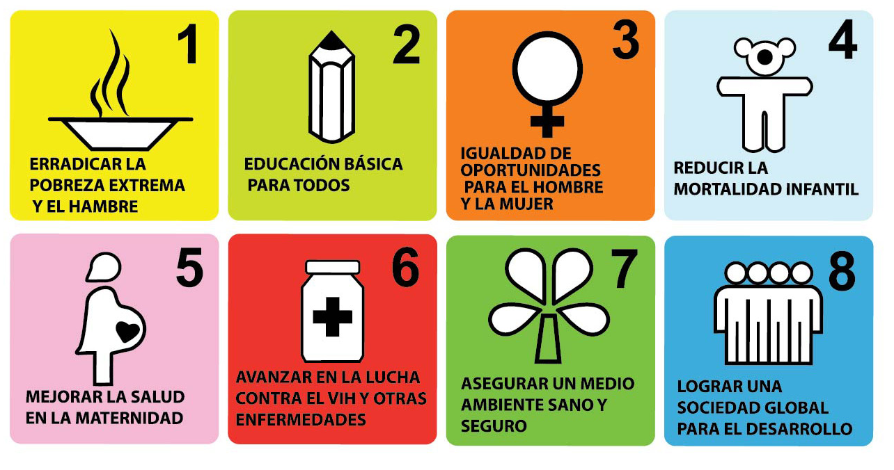

Objetivos de la Declaración del Milenio
La Declaración del Milenio, adoptada en la Cumbre del Milenio de las Naciones Unidas en septiembre de 2000, representa un compromiso histórico por parte de líderes mundiales para abordar los problemas más acuciantes de la humanidad. Este documento visionario estableció un conjunto de ocho Objetivos de Desarrollo del Milenio (ODM), que se proponían alcanzar para el año 2015, y que abarcan áreas cruciales como la erradicación de la pobreza, la promoción de la igualdad de género, la mejora de la salud materna e infantil, la lucha contra enfermedades mortales como el VIH/SIDA y la malaria, y la promoción de la sostenibilidad ambiental. Estos ODM fueron un llamado a la acción global sin precedentes y se convirtieron en un faro de esperanza para millones de personas en todo el mundo.
Objetivos de Desarrollo del Milenio (ODM): Una Agenda Transformadora
- Reducir la mortalidad infantil y mejorar la salud materna: Los ODM 4 y 5 buscaban reducir la mortalidad infantil y materna. Se realizaron inversiones sustanciales en servicios de salud materno-infantil, lo que resultó en una disminución significativa de las tasas de mortalidad en muchas partes del mundo.
- Combatir el VIH/SIDA, el paludismo y otras enfermedades: El ODM 6 se centraba en controlar la propagación del VIH/SIDA, el paludismo y otras enfermedades. Se lograron avances en la prevención y tratamiento de estas enfermedades, aunque los desafíos persisten, especialmente en algunas regiones.
- Garantizar la sostenibilidad del medio ambiente: El séptimo ODM apuntaba a abordar la degradación ambiental y promover la sostenibilidad, reconociendo la importancia de un planeta saludable para el bienestar de las generaciones futuras. Se tomaron medidas para reducir la pérdida de bosques, promover la gestión sostenible del agua y abordar el cambio climático.
Indicadores sobresalientes del documento
- Erradicar la pobreza extrema y el hambre: El primer ODM buscaba reducir a la mitad la proporción de personas que vivían con menos de un dólar al día y garantizar que todos tuvieran acceso a alimentos suficientes. A pesar de los desafíos, se lograron avances significativos en la reducción de la pobreza global durante este período.
- Lograr la educación primaria universal: El segundo ODM se centraba en asegurar que todos los niños, independientemente de su género o condición social, tuvieran acceso a una educación primaria de calidad. Se implementaron políticas y programas que permitieron un aumento sustancial en las tasas de escolarización en todo el mundo.
- Promover la igualdad de género y empoderar a las mujeres: El tercer ODM tenía como objetivo eliminar las disparidades de género en la educación y garantizar la igualdad de oportunidades para las mujeres en todos los niveles de toma de decisiones. Se avanzó en la igualdad de género en varias regiones, aunque persisten desafíos importantes.
